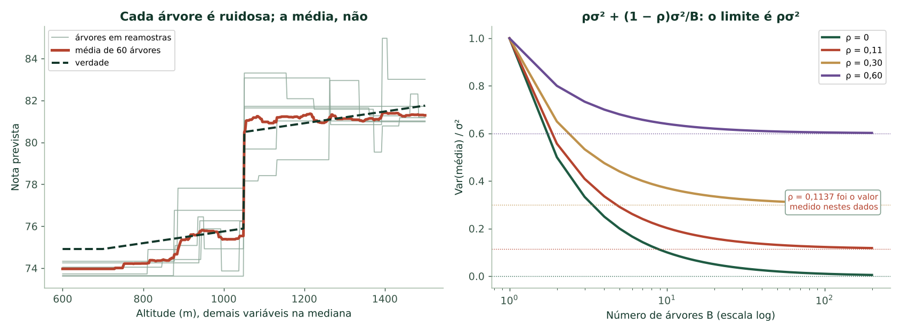
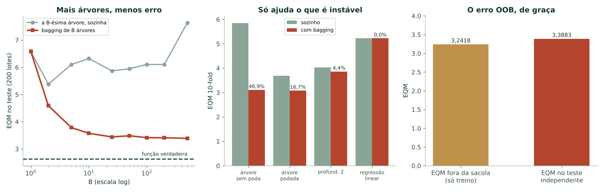

Bagging (bootstrap aggregation)
Ajusta uma árvore em cada reamostra bootstrap e tira a média — a variância de uma árvore se cancela, o viés baixo permanece.
Comece por aqui
A ficha das árvores terminou com um diagnóstico: a árvore acerta a estrutura grossa, mas é instável — reamostrar os dados muda os cortes inferiores e o número de folhas. Bagging (de bootstrap aggregating, Breiman, 1996) transforma essa fraqueza em matéria-prima: ajusta uma árvore em cada uma de muitas reamostras bootstrap e tira a média das predições. A instabilidade, que era ruído em uma árvore, se cancela na média.
Bagging pode ser aplicado a qualquer procedimento de ajuste. A ficha mostra que ele reduz em 46,9% o erro de uma árvore sem poda e em 0,0% o de uma regressão linear. A diferença não está no bagging, mas no procedimento: só se ganha com a média quando há variância para reduzir.
O que é o bagging
Com um conjunto de treino de tamanho \(n\), sorteiam-se \(B\) reamostras de tamanho \(n\) com reposição. Em cada reamostra ajusta-se o mesmo procedimento — tipicamente uma árvore profunda, sem poda, de viés baixo e variância alta. A predição final é a média das \(B\) predições (regressão) ou a média das probabilidades, ou o voto da maioria (classificação).

| Aspecto | Uma árvore | Bagging de B árvores |
|---|---|---|
| Viés | O da árvore | Aproximadamente o mesmo |
| Variância | Alta | Reduzida, até o limite ρσ² |
| Legibilidade | Uma árvore desenhável | Perdida: são B árvores |
| Validação | Exige validação cruzada | O erro OOB vem de graça |
| Custo | Um ajuste | B ajustes (paralelizáveis) |
Pressupostos e como verificá-los
| Pressuposto ou cuidado | Por que importa | Como verificar |
|---|---|---|
| Observações independentes | A reamostragem bootstrap supõe isso. | Desenho; com grupos, reamostre grupos. |
| Procedimento-base instável | Sem variância, não há o que reduzir. | Compare o erro com e sem bagging. |
| Viés baixo do procedimento-base | A média não remove viés. | Use árvores profundas, não podadas. |
| B suficiente | Pouco B deixa variância de Monte Carlo. | Curva do erro OOB em função de B. |
| Erro OOB com n razoável | Cada observação fica fora de ~37% das árvores. | Compare com um teste independente. |
Formulação e cálculo
Em que:
- \(\hat f^{*b}\)
- o modelo ajustado na \(b\)-ésima reamostra bootstrap
- \(B\)
- número de reamostras (de árvores)
Por que funciona: a variância de uma média
Se cada árvore tem variância \(\sigma^2\) (sobre a variação dos dados de treino) e duas árvores quaisquer, ajustadas ao mesmo treino, têm correlação \(\rho\), então
Em que:
- \(\sigma^2\)
- variância da predição de uma árvore
- \(\rho\)
- correlação entre as predições de duas árvores do mesmo treino
O segundo termo vai a zero com \(B\); o primeiro não depende de \(B\). Aumentar o número de árvores nunca piora o bagging, mas o ganho satura em \(\rho\sigma^2\).
Exemplo numérico, com a verdade conhecida
Como o processo gerador é conhecido, sortearam-se 30 conjuntos de treino novos (mesmos lotes, novo erro) e 50 árvores em cada, para medir \(\sigma^2\) e \(\rho\) diretamente: \(\sigma^2=3{,}0926\), covariância entre árvores do mesmo treino 0,3515, logo \(\rho=0{,}3515/3{,}0926=0{,}1137\).
| B | ρσ² + (1 − ρ)σ²/B | Limite ρσ² |
|---|---|---|
| 1 | 3,0926 | 0,3515 |
| 5 | 0,8997 | 0,3515 |
| 25 | 0,4611 | 0,3515 |
| 100 | 0,3789 | 0,3515 |
| 500 | 0,3570 | 0,3515 |
Com 25 árvores, a variância da predição já caiu de 3,0926 para 0,4611 — 85% da redução possível. De 100 para 500 árvores, cai de 0,3789 para 0,3570. O valor de \(\rho\) aqui é baixo (0,11) porque só o erro aleatório varia entre os treinos simulados; em dados reais, em que as próprias preditoras mudam de amostra para amostra, \(\rho\) é tipicamente maior. Reduzir \(\rho\) é exatamente o que a random forest faz.
O erro fora da sacola
Uma reamostra de tamanho \(n\) deixa de fora cada observação com probabilidade \((1-1/n)^n\to e^{-1}\approx 0{,}368\). Prevendo cada observação só com as árvores que não a viram, obtém-se uma estimativa do erro de teste sem separar dados: o erro OOB (out-of-bag). Nos dados, cada lote ficou fora de 36,68% das árvores, e o EQM OOB foi 3,2418, contra 3,3883 num teste independente.
Propriedades
- Reduz variância; não reduz viés.
- Nunca piora com mais árvores (em esperança).
- O ganho depende da instabilidade do procedimento-base.
- O erro OOB é aproximadamente o de uma validação cruzada.
- Perde a interpretabilidade da árvore única.
- Paralelizável: as árvores são independentes.
Como interpretar os resultados
| Elemento | O que informa | Cuidado |
|---|---|---|
| EQM ou erro OOB | Estimativa do erro de teste. | Precisa de B grande. |
| % de variância explicada (randomForest) | 1 − EQM OOB / variância. | É OOB, não de treino. |
| Curva do erro em função de B | Se B basta. | Deve estabilizar, não subir. |
| Importância das variáveis | Ver a ficha random forest. | Mesmos cuidados. |
Como executar no R e em Python
Onde executar o código em Python
Não é preciso instalar nada: o Google Colab é um computador na nuvem, gratuito, que executa Python pelo navegador e já traz as bibliotecas usadas aqui (numpy, scipy e matplotlib).
O bagging de árvores é a floresta aleatória com mtry igual ao número de preditoras: randomForest(nota ~ ., data = cafe, mtry = 6, ntree = 500), do pacote randomForest, ou ranger(…, mtry = 6), mais rápido. O objeto traz o erro OOB e o gráfico do erro em função do número de árvores. Para bagging de outros procedimentos, o pacote ipred (bagging()) ou um laço com sample(…, replace = TRUE). Em Python, sklearn.ensemble.BaggingRegressor e BaggingClassifier, com oob_score=True.
library(randomForest)
set.seed(1)
bag <- randomForest(nota ~ alt + temp + chuva + somb + nfol + ph,
data = cafe, mtry = 6, ntree = 500)
bag # EQM fora da sacola
plot(bag) # erro em função do número de árvores
Exemplo de aplicação
Contexto dos dados
Os dados são fictícios e foram criados pelo autor: 600 lotes de café, cada um com a nota sensorial (escala SCA, de 70,0 a 86,1) e seis variáveis da lavoura — altitude (600 a 1.500 m), temperatura média (14 a 26 °C), chuva anual (mm), sombreamento (%), nitrogênio foliar (dag/kg) e pH do solo. Um lote é fino quando a nota é 80 ou mais (204 lotes, 34,0%). O processo gerador é conhecido e foi desenhado para ter as duas estruturas que os modelos aditivos não representam: um degrau de +4,6 pontos acima de 1.050 m de altitude e uma interação — o sombreamento melhora a nota quando a temperatura passa de 20,5 °C e a piora abaixo disso —, além de partes suaves em chuva, nitrogênio e pH e um erro de desvio-padrão 1,55. Altitude e temperatura têm correlação de −0,822, como na realidade. Como a verdade é conhecida, sabem-se os dois pisos: nenhum modelo de regressão pode ter erro quadrático esperado abaixo de \(\sigma^2=2{,}4025\), e nenhum classificador pode errar menos que o erro de Bayes, 0,1596. O mesmo conjunto atravessa as dez fichas dos grupos de árvores e de classificadores, o que permite comparar todos os métodos na mesma régua.
Código em R
# Bagging (bootstrap aggregation): exemplo completo ----
# Pacotes: rpart (incluído no R) e randomForest
# Dados fictícios: 600 lotes de café (arquivo cafe.csv, pasta scripts/ do site).
# Baixe o arquivo para a pasta de trabalho, ou leia direto do endereço:
url <- "https://cassiushenrique.github.io/ModelosEstatisticos/scripts/cafe.csv"
cafe <- if (file.exists("cafe.csv")) read.csv("cafe.csv") else read.csv(url)
str(cafe) # nota, fino (0/1), alt, temp, chuva, somb, nfol, ph
cafe$fino_f <- factor(cafe$fino, levels = c(0, 1), labels = c("nao", "fino"))
table(cafe$fino_f)
library(rpart)
f <- nota ~ alt + temp + chuva + somb + nfol + ph
# ---- 1. Bagging à mão: B árvores profundas, cada uma numa reamostra
set.seed(7)
i_te <- sample(nrow(cafe), 200); treino <- cafe[-i_te, ]; teste <- cafe[i_te, ]
B <- 500
P <- sapply(1:B, function(b) {
i <- sample(nrow(treino), replace = TRUE)
a <- rpart(f, data = treino[i, ], control = rpart.control(cp = 0, minsplit = 2, minbucket = 1, xval = 0))
predict(a, teste)
})
eqm <- function(o, p) mean((o - p)^2)
c(uma_arvore = mean(apply(P, 2, function(p) eqm(teste$nota, p))),
bagging = eqm(teste$nota, rowMeans(P)))
# EQM do bagging em função de B
plot(sapply(1:B, function(b) eqm(teste$nota, rowMeans(P[, 1:b, drop = FALSE]))),
type = "l", log = "x", xlab = "B", ylab = "EQM no teste")
# ---- 2. O mesmo com randomForest: bagging é a floresta com mtry = p
library(randomForest)
set.seed(1)
bag <- randomForest(f, data = cafe, mtry = 6, ntree = 500, importance = TRUE)
bag # traz o EQM fora da sacola (OOB) e o % de variância explicada
plot(bag) # EQM OOB em função do número de árvores
# ---- 3. Bagging só ajuda procedimentos instáveis
set.seed(1)
d <- sample(rep(1:10, length.out = nrow(cafe)))
cv <- function(ajusta) {
e <- numeric(nrow(cafe))
for (j in 1:10) { tr <- cafe[d != j, ]; te <- cafe[d == j, ]; e[d == j] <- te$nota - ajusta(tr, te) }
mean(e^2)
}
bag_de <- function(ajuste, B = 200) function(tr, te)
rowMeans(sapply(1:B, function(b) ajuste(tr[sample(nrow(tr), replace = TRUE), ], te)))
lin <- function(tr, te) predict(lm(f, data = tr), te)
arv <- function(tr, te) predict(rpart(f, data = tr, control = rpart.control(cp = 0, minsplit = 2, xval = 0)), te)
c(linear = cv(lin), linear_bag = cv(bag_de(lin)),
arvore = cv(arv), arvore_bag = cv(bag_de(arv)))
# ---- 4. Classificação: média das probabilidades das árvores
set.seed(1)
bag_c <- randomForest(fino_f ~ alt + temp + chuva + somb + nfol + ph, data = cafe,
mtry = 6, ntree = 500)
bag_c$err.rate[500, "OOB"] # erro fora da sacola
A mesma análise em Python, com os resultados
Cole o código em um notebook do Google Colab ↗ e execute com Shift+Enter. Os valores abaixo são a saída desse código.
import numpy as np
# ------------------------------------------------------------------
# Bloco comum às fichas deste grupo: funções auxiliares e dados (cab16)
# ------------------------------------------------------------------
import numpy as np
from scipy.stats import norm
# ------------------------------------------------------------------
# Bloco comum às fichas deste grupo: funções auxiliares e dados (dados16)
# ------------------------------------------------------------------
import numpy as np
import pandas as pd
def le_csv(nome):
"""Lê o arquivo de dados da ficha: primeiro na pasta atual; se não
estiver lá (por exemplo, no Google Colab), direto do site."""
try:
return pd.read_csv(nome)
except FileNotFoundError:
return pd.read_csv('https://cassiushenrique.github.io/ModelosEstatisticos/scripts/' + nome)
# Dados fictícios: 600 lotes de café (arquivo cafe.csv, pasta scripts/ do site)
cafe = le_csv('cafe.csv')
ALT, TEMP, CHUVA = (cafe[k].to_numpy(float) for k in ('alt', 'temp', 'chuva'))
SOMB, NFOL, PH = (cafe[k].to_numpy(float) for k in ('somb', 'nfol', 'ph'))
NOTA = cafe['nota'].to_numpy(float); FINO = cafe['fino'].to_numpy(int)
NOMES=['alt','temp','chuva','somb','nfol','ph']
ROT={'alt':'Altitude','temp':'Temperatura','chuva':'Chuva','somb':'Sombreamento','nfol':'N foliar','ph':'pH'}
X=np.column_stack([ALT,TEMP,CHUVA,SOMB,NFOL,PH])
NC,PC=X.shape; SIGN=1.55
def f_nota(alt,temp,chuva,somb,nfol,ph):
deg=4.6*(np.asarray(alt)>=1050); rampa=0.0028*np.clip(np.asarray(alt)-700,0,None)
inter=np.where(np.asarray(temp)>20.5,0.052*np.asarray(somb),-0.030*np.asarray(somb))
agua=-2.6e-6*(np.asarray(chuva)-1450)**2
nitro=2.9*np.log(np.asarray(nfol)/1.6); acid=-1.9*(np.asarray(ph)-5.4)**2
return 74.0+deg+rampa+inter+agua+nitro+acid
def verdade(A): return f_nota(A[:,0],A[:,1],A[:,2],A[:,3],A[:,4],A[:,5])
# ------------------------------------------------------------------ fim do bloco comum
def c(v, d=4): return ('%.*f' % (d, v)).replace('.', ',')
def eqm(o, p): return float(np.mean((np.asarray(o) - np.asarray(p))**2))
def r2(o, p): return 1 - float(np.sum((np.asarray(o)-np.asarray(p))**2))/float(np.sum((np.asarray(o)-np.mean(o))**2))
def acur(o, p): return float(np.mean(np.asarray(o) == np.asarray(p)))
MU = verdade(X) # média verdadeira da nota
PVER = 1 - norm.cdf((80 - MU)/SIGN) # P(fino | x) verdadeira
ERRO_BAYES = float(np.mean(np.minimum(PVER, 1 - PVER)))
EQM_PISO = SIGN**2
def dobras(n, k, seed):
rg = np.random.default_rng(seed)
d = np.tile(np.arange(k), int(np.ceil(n/k)))[:n]; rg.shuffle(d); return d
def cv_reg(fabrica, A, y, k=10, seed=0, reps=1):
"""EQM por validação cruzada. fabrica() devolve um estimador sklearn novo."""
tot = []
for r in range(reps):
d = dobras(len(y), k, seed + 101*r); e = np.empty(len(y))
for j in range(k):
tr, te = d != j, d == j
m = fabrica().fit(A[tr], y[tr]); e[te] = y[te] - m.predict(A[te])
tot.append(float(np.mean(e**2)))
return float(np.mean(tot)), (float(np.std(tot, ddof=1)) if reps > 1 else 0.0)
def cv_clf(fabrica, A, y, k=10, seed=0, reps=1, prob=False):
"""Erro de classificação (e, se prob, log-loss e Brier) por validação cruzada."""
err = []; ll = []; br = []
for r in range(reps):
d = dobras(len(y), k, seed + 101*r); pred = np.empty(len(y)); pp = np.empty(len(y))
for j in range(k):
tr, te = d != j, d == j
m = fabrica().fit(A[tr], y[tr]); pred[te] = m.predict(A[te])
if prob: pp[te] = m.predict_proba(A[te])[:, 1]
err.append(float(np.mean(pred != y)))
if prob:
q = np.clip(pp, 1e-6, 1 - 1e-6)
ll.append(float(-np.mean(y*np.log(q) + (1 - y)*np.log(1 - q))))
br.append(float(np.mean((pp - y)**2)))
if prob: return float(np.mean(err)), float(np.mean(ll)), float(np.mean(br))
return float(np.mean(err)), (float(np.std(err, ddof=1)) if reps > 1 else 0.0)
def padroniza(A, ref=None):
ref = A if ref is None else ref
mu, sd = ref.mean(0), ref.std(0, ddof=1); return (A - mu)/sd, mu, sd
DADOS_TXT = ('600 lotes de café, nota sensorial (escala SCA, de 70 a 86) e seis variáveis de lavoura: '
'altitude, temperatura média, chuva anual, sombreamento, N foliar e pH. Lote "fino" = nota >= 80.')
# ------------------------------------------------------------------ fim do bloco comum
from sklearn.tree import DecisionTreeRegressor, DecisionTreeClassifier
from sklearn.linear_model import LinearRegression
from sklearn.ensemble import BaggingRegressor
y=NOTA
print('LOTES DE CAFÉ:',DADOS_TXT)
print('Resposta: a nota. Piso irredutível sigma² = %s.'%c(EQM_PISO))
print('\n'+'='*70)
print('BAGGING À MÃO: B árvores, cada uma numa reamostra bootstrap')
print('Separamos 200 lotes de TESTE, que nenhuma árvore vê.')
rg=np.random.default_rng(7)
idx=rg.permutation(NC); te,tr=idx[:200],idx[200:]
Xtr,ytr,Xte,yte=X[tr],y[tr],X[te],y[te]; n=len(tr)
B=500
P=np.empty((B,len(te))); OOB=np.zeros(n); NOOB=np.zeros(n)
for b in range(B):
i=rg.integers(0,n,n)
m=DecisionTreeRegressor(random_state=b).fit(Xtr[i],ytr[i]) # árvore PROFUNDA, sem poda
P[b]=m.predict(Xte)
fora=np.setdiff1d(np.arange(n),i)
OOB[fora]+=m.predict(Xtr[fora]); NOOB[fora]+=1
print()
print('%8s %18s %18s'%('B','EQM no teste','EQM do bagging'))
print('%8s %18s %18s'%('','(uma árvore)','(média de B)'))
for b in [1,2,5,10,25,50,100,200,500]:
print('%8d %18s %18s'%(b,c(eqm(yte,P[b-1])),c(eqm(yte,P[:b].mean(0)))))
print()
print('Uma árvore isolada, sem poda: EQM médio no teste = %s'%c(float(np.mean([eqm(yte,P[b]) for b in range(B)]))))
print('Bagging com 500 árvores: = %s'%c(eqm(yte,P.mean(0))))
pod=DecisionTreeRegressor(ccp_alpha=0.0443,random_state=0).fit(Xtr,ytr)
print('Uma árvore PODADA (ficha de árvores): = %s'%c(eqm(yte,pod.predict(Xte))))
print('Função verdadeira: = %s'%c(eqm(yte,MU[te])))
print('\n'+'='*70)
print('POR QUE FUNCIONA: a decomposição da variância de uma média')
print('Se cada árvore tem variância s² e duas árvores quaisquer têm correlação rho,')
print(' Var(média de B árvores) = rho*s² + (1-rho)*s²/B')
print('Aqui rho é a correlação entre duas árvores ajustadas ao MESMO conjunto')
print('de treino, considerando a variação de um conjunto de treino para outro.')
print('Como o processo gerador é conhecido, sorteamos 30 conjuntos de treino')
print('novos (mesmos lotes, novo erro aleatório) e 50 árvores em cada um.')
R,Bb=30,50; Q=np.empty((R,Bb,len(te)))
for r in range(R):
yr=MU[tr]+rg.normal(0,SIGN,n)
for b in range(Bb):
i=rg.integers(0,n,n); Q[r,b]=DecisionTreeRegressor(random_state=b).fit(Xtr[i],yr[i]).predict(Xte)
s2=float(np.mean(Q.reshape(R*Bb,-1).var(0,ddof=1))) # variância de UMA árvore
cov=float(np.mean(Q.mean(1).var(0,ddof=1)-Q.var(1,ddof=1).mean(0)/Bb)) # covariância entre duas do mesmo treino
rho=cov/s2
print()
print(' variância de uma árvore, média nos pontos de teste s² = %s'%c(s2))
print(' covariância entre duas árvores do mesmo treino = %s'%c(cov))
print(' correlação média entre duas árvores rho = %s'%c(rho))
print()
print('%8s %22s %22s'%('B','variância prevista','rho*s² (o limite)'))
for b in [1,5,25,100,500]:
print('%8d %22s %22s'%(b,c(rho*s2+(1-rho)*s2/b),c(rho*s2)))
print()
print('Aumentar B elimina a segunda parcela, mas NUNCA a primeira. As árvores')
print('são correlacionadas porque veem quase os mesmos dados e escolhem quase')
print('os mesmos cortes. É essa correlação que a random forest vai atacar.')
print('\n'+'='*70)
print('O ERRO FORA DA SACOLA (out-of-bag, OOB)')
print('Cada reamostra deixa de fora, em média, (1-1/n)^n ~ e^-1 = 36,8% dos lotes.')
ok=NOOB>0
print(' fração média de árvores em que um lote ficou fora: %s'%c(float(np.mean(NOOB/B))))
print(' EQM OOB (no treino, sem usar o teste) = %s'%c(eqm(ytr[ok],OOB[ok]/NOOB[ok])))
print(' EQM no teste independente = %s'%c(eqm(yte,P.mean(0))))
print('O OOB é uma estimativa honesta de graça: dispensa a validação cruzada.')
print('\n'+'='*70)
print('BAGGING SÓ AJUDA PROCEDIMENTOS INSTÁVEIS')
print('Mesmo experimento, 10 dobras x 3 repetições, B = 200:')
print()
print('%-30s %14s %14s %12s'%('procedimento','sozinho','com bagging','ganho'))
for nm,f in [('árvore sem poda',lambda: DecisionTreeRegressor(random_state=0)),
('árvore podada',lambda: DecisionTreeRegressor(ccp_alpha=0.0443,random_state=0)),
('árvore de profundidade 2',lambda: DecisionTreeRegressor(max_depth=2,random_state=0)),
('regressão linear',LinearRegression)]:
a,_=cv_reg(f,X,y,10,0,3)
b,_=cv_reg(lambda f=f: BaggingRegressor(f(),n_estimators=200,random_state=0,n_jobs=1),X,y,10,0,3)
print('%-30s %14s %14s %11s%%'%(nm,c(a),c(b),c(100*(a-b)/a,1)))
print()
print('A regressão linear é estável: reamostrar quase não muda a reta, e a')
print('média de retas quase iguais é a mesma reta. A árvore de profundidade 2')
print('tem pouco a ganhar: seu erro é VIÉS, e a média não remove viés.')
print('\n'+'='*70)
print('CLASSIFICAÇÃO: voto da maioria ou média das probabilidades')
yc=FINO
d=dobras(NC,10,0); voto=np.empty(NC); prob=np.empty(NC); um=np.empty(NC)
for j in range(10):
trj,tej=d!=j,d==j; n2=trj.sum(); Xa,ya=X[trj],yc[trj]
V=[];Q=[]
for b in range(200):
i=rg.integers(0,n2,n2); m=DecisionTreeClassifier(random_state=b).fit(Xa[i],ya[i])
V.append(m.predict(X[tej])); Q.append(m.predict_proba(X[tej])[:,-1])
if b==0: um[tej]=V[0]
voto[tej]=(np.mean(V,0)>=.5); prob[tej]=np.mean(Q,0)
print()
print(' uma árvore sem poda: erro 10-fold = %s'%c(acur(yc,um)*-1+1))
print(' bagging, voto da maioria (B = 200) = %s'%c(1-acur(yc,voto)))
print(' bagging, média das probabilidades = %s'%c(1-acur(yc,(prob>=.5).astype(int))))
print(' erro de Bayes = %s'%c(ERRO_BAYES))
q=np.clip(prob,1e-6,1-1e-6)
print(' log-loss da média das probabilidades = %s'%c(float(-np.mean(yc*np.log(q)+(1-yc)*np.log(1-q)))))
print(' Brier = %s'%c(float(np.mean((prob-yc)**2))))
Resultados da execução
LOTES DE CAFÉ: 600 lotes de café, nota sensorial (escala SCA, de 70 a 86) e seis variáveis de lavoura: altitude, temperatura média, chuva anual, sombreamento, N foliar e pH. Lote "fino" = nota >= 80.
Resposta: a nota. Piso irredutível sigma² = 2,4025.
======================================================================
BAGGING À MÃO: B árvores, cada uma numa reamostra bootstrap
Separamos 200 lotes de TESTE, que nenhuma árvore vê.
B EQM no teste EQM do bagging
(uma árvore) (média de B)
1 6,5844 6,5844
2 5,3799 4,5887
5 6,1049 3,7856
10 6,3226 3,5730
25 5,8697 3,4392
50 5,9468 3,4828
100 6,1060 3,4121
200 6,1059 3,4095
500 7,6420 3,3883
Uma árvore isolada, sem poda: EQM médio no teste = 6,4264
Bagging com 500 árvores: = 3,3883
Uma árvore PODADA (ficha de árvores): = 4,1375
Função verdadeira: = 2,6315
======================================================================
POR QUE FUNCIONA: a decomposição da variância de uma média
Se cada árvore tem variância s² e duas árvores quaisquer têm correlação rho,
Var(média de B árvores) = rho*s² + (1-rho)*s²/B
Aqui rho é a correlação entre duas árvores ajustadas ao MESMO conjunto
de treino, considerando a variação de um conjunto de treino para outro.
Como o processo gerador é conhecido, sorteamos 30 conjuntos de treino
novos (mesmos lotes, novo erro aleatório) e 50 árvores em cada um.
variância de uma árvore, média nos pontos de teste s² = 3,0926
covariância entre duas árvores do mesmo treino = 0,3515
correlação média entre duas árvores rho = 0,1137
B variância prevista rho*s² (o limite)
1 3,0926 0,3515
5 0,8997 0,3515
25 0,4611 0,3515
100 0,3789 0,3515
500 0,3570 0,3515
Aumentar B elimina a segunda parcela, mas NUNCA a primeira. As árvores
são correlacionadas porque veem quase os mesmos dados e escolhem quase
os mesmos cortes. É essa correlação que a random forest vai atacar.
======================================================================
O ERRO FORA DA SACOLA (out-of-bag, OOB)
Cada reamostra deixa de fora, em média, (1-1/n)^n ~ e^-1 = 36,8% dos lotes.
fração média de árvores em que um lote ficou fora: 0,3668
EQM OOB (no treino, sem usar o teste) = 3,2418
EQM no teste independente = 3,3883
O OOB é uma estimativa honesta de graça: dispensa a validação cruzada.
======================================================================
BAGGING SÓ AJUDA PROCEDIMENTOS INSTÁVEIS
Mesmo experimento, 10 dobras x 3 repetições, B = 200:
procedimento sozinho com bagging ganho
árvore sem poda 5,8495 3,1053 46,9%
árvore podada 3,6933 3,0775 16,7%
árvore de profundidade 2 4,0357 3,8590 4,4%
regressão linear 5,2218 5,2207 0,0%
A regressão linear é estável: reamostrar quase não muda a reta, e a
média de retas quase iguais é a mesma reta. A árvore de profundidade 2
tem pouco a ganhar: seu erro é VIÉS, e a média não remove viés.
======================================================================
CLASSIFICAÇÃO: voto da maioria ou média das probabilidades
uma árvore sem poda: erro 10-fold = 0,2350
bagging, voto da maioria (B = 200) = 0,1833
bagging, média das probabilidades = 0,1833
erro de Bayes = 0,1596
log-loss da média das probabilidades = 0,4513
Brier = 0,1315
| B | A B-ésima árvore sozinha | Bagging das B primeiras |
|---|---|---|
| 1 | 6,5844 | 6,5844 |
| 2 | 5,3799 | 4,5887 |
| 5 | 6,1049 | 3,7856 |
| 10 | 6,3226 | 3,5730 |
| 25 | 5,8697 | 3,4392 |
| 100 | 6,1060 | 3,4121 |
| 500 | 7,6420 | 3,3883 |
| Modelo | EQM no teste |
|---|---|
| Uma árvore sem poda (média de 500) | 6,4264 |
| Uma árvore podada | 4,1375 |
| Bagging de 500 árvores sem poda | 3,3883 |
| Função verdadeira | 2,6315 |
| Procedimento | Sozinho | Com bagging | Ganho |
|---|---|---|---|
| Árvore sem poda | 5,8495 | 3,1053 | 46,9% |
| Árvore podada | 3,6933 | 3,0775 | 16,7% |
| Árvore de profundidade 2 | 4,0357 | 3,8590 | 4,4% |
| Regressão linear | 5,2218 | 5,2207 | 0,0% |
| Regra | Erro |
|---|---|
| Uma árvore sem poda | 0,2350 |
| Bagging, voto da maioria | 0,1833 |
| Bagging, média das probabilidades | 0,1833 |
| Erro de Bayes | 0,1596 |
Leitura: a média de árvores sem poda (3,3883) é melhor que a melhor árvore podada (4,1375). A poda reduzia a variância cortando a árvore e, com isso, aumentava o viés; o bagging reduz a variância sem cortar, mantendo o viés baixo das árvores profundas. É por isso que no bagging se usam árvores sem poda.
A tabela dos quatro procedimentos é a lição central. A árvore sem poda, a mais instável, ganha 46,9%. A podada, já mais estável, 16,7%. A de profundidade 2, quase sem variância e com muito viés, ganha 4,4% — a média de árvores rasas continua rasa. A regressão linear não ganha nada: reamostrar quase não muda a reta, e a média de retas quase iguais é a mesma reta. Na classificação, o bagging leva o erro de 0,2350 a 0,1833, e o log-loss da média das probabilidades fica em 0,4513 — muito melhor que o de uma árvore de folhas puras.
Erros comuns
| Erro | Como evitar |
|---|---|
| Fazer bagging de árvores podadas | Use árvores profundas: a média cuida da variância. |
| Esperar ganho com modelos estáveis | Linear, logística: o ganho é nulo. |
| Usar B pequeno | Olhe a curva do erro OOB. |
| Achar que mais árvores sobreajustam | Não sobreajustam; o erro estabiliza. |
| Reportar o erro de treino | Use o OOB ou um teste. |
| Reamostrar observações dependentes individualmente | Reamostre grupos. |
Alternativas e quando cada uma é preferível
| Procedimento | Quando preferir |
|---|---|
| Random forest | Quase sempre: reduz a correlação entre as árvores e costuma ganhar do bagging. |
| Boosting | Quando o problema é viés, não variância. |
| BART | Comitê de árvores com incerteza bayesiana. |
| Uma árvore podada | Quando a legibilidade é essencial. |
| Subagging (subamostras sem reposição) | Dados grandes; efeito parecido, mais barato. |
- Ajuste a árvore única como referência.
- Ajuste o bagging com árvores sem poda e B = 500.
- Confira a curva do erro OOB.
- Compare com uma random forest (mtry menor).
- Valide em dados independentes, se houver.
Referências desta ficha
- BREIMAN, Leo. Bagging predictors. Machine Learning, v. 24, n. 2, p. 123-140, 1996.
- EFRON, Bradley; TIBSHIRANI, Robert J. An introduction to the bootstrap. New York: Chapman & Hall, 1993.
- BÜHLMANN, Peter; YU, Bin. Analyzing bagging. The Annals of Statistics, v. 30, n. 4, p. 927-961, 2002.
- FRIEDMAN, Jerome H.; HALL, Peter. On bagging and nonlinear estimation. Journal of Statistical Planning and Inference, v. 137, n. 3, p. 669-683, 2007.
- HASTIE, Trevor; TIBSHIRANI, Robert; FRIEDMAN, Jerome. The elements of statistical learning. 2. ed. New York: Springer, 2009.
- JAMES, Gareth; WITTEN, Daniela; HASTIE, Trevor; TIBSHIRANI, Robert. An introduction to statistical learning: with applications in R. 2. ed. New York: Springer, 2021.
- LIAW, Andy; WIENER, Matthew. Classification and regression by randomForest. R News, v. 2, n. 3, p. 18-22, 2002.
- THERNEAU, Terry; ATKINSON, Beth. rpart: recursive partitioning and regression trees. R package. Disponível em: https://CRAN.R-project.org/package=rpart.
- R CORE TEAM. R: a language and environment for statistical computing. Vienna: R Foundation for Statistical Computing, 2026. Disponível em: https://www.r-project.org/.
- POSIT TEAM. RStudio: integrated development environment for R. Boston: Posit Software, PBC. Disponível em: https://posit.co/download/rstudio-desktop/.
- PEDREGOSA, Fabian et al. Scikit-learn: machine learning in Python. Journal of Machine Learning Research, v. 12, p. 2825-2830, 2011. (Função
sklearn.datasets.load_iris.) - VIRTANEN, Pauli et al. SciPy 1.0: fundamental algorithms for scientific computing in Python. Nature Methods, v. 17, p. 261-272, 2020. DOI: 10.1038/s41592-019-0686-2. (Funções do módulo
scipy.stats.) - HARRIS, Charles R. et al. Array programming with NumPy. Nature, v. 585, p. 357-362, 2020. DOI: 10.1038/s41586-020-2649-2.
- HUNTER, John D. Matplotlib: a 2D graphics environment. Computing in Science & Engineering, v. 9, n. 3, p. 90-95, 2007.
- GOOGLE. Google Colaboratory. Disponível em: https://colab.research.google.com/.
- As figuras desta ficha foram elaboradas pelo autor.

Prof. Dr. Cássius Henrique Xavier Oliveira
Professor · ICTIN/UFLA · Estatística, Confiabilidade e Ciência de Dados.
Conheça minha trajetória e projetos →